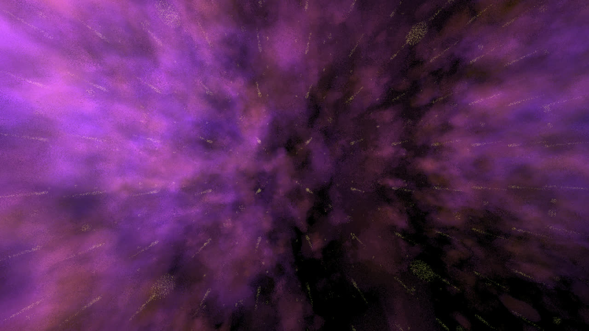

ポートフォリオ
Portfolio
JA
EN

Nebula
年
Year
2023
かたち
Form
GLSL（シェーダー）
GLSL (shader)
発表
Shown at
16ms #0（GLSL Graphics Compo、2023年10月）
16ms #0 (GLSL Graphics Compo, October 2023)
16ms
リンク
Link
neort
fBm ノイズによる星雲のシミュレーション。
A nebula simulation using fBm noise.
(draft)
← 前
← Prev
作品 →
Works →
作品
Works
考え方
Thinking
連絡
Contact